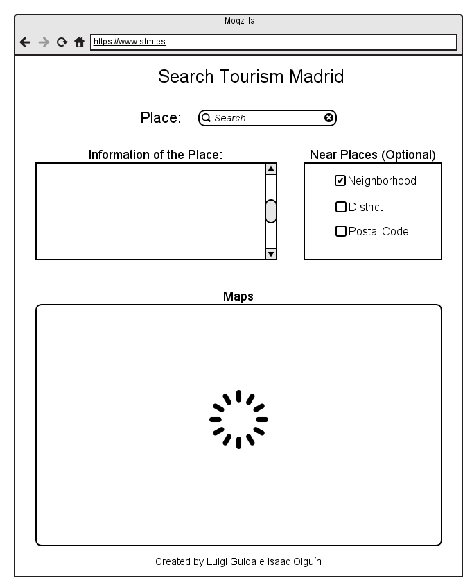

Application Requirements
Group04
Reasons of the Application
The application called "Search Tourism Madrid" is intended mainly for tourist, although
we think and hope, could be an useful tool for "Madrileños". Some questions which are the reason
and the starting of this application are:
- What happens if somebody comes Madrid and have a short period of time, so he couldn't
move from one place to another with large distances?
- If a tourist need to do something in his embassy or consulated, but then he need to
wait or has time, He could approach to visit an interesting place, but... Where
does he need to go? How to know it?
- A Madrileño has been living all his life in a neighborhood, and he knows there are
touristic places around him, How to know the information of these places?
Interface

Description of the Interface
The user only needs to write the place, building, embassy, consulated (by now, we hope any
touristic place in the future) into the "Search" section, so the application shows its data, as
address, street or avenue, district, coordenates, subway stations near, etc. Besides these
information, it is show the map, I mean the localization in a geographic area.
If the tourist would like to know which other places are over there, he only needs go to "Near
Places (Optional)" and choose one of the options. If he choose "Neighborhood", "District" or
"Postal Code", the information increase, showing the data of its places situated near of the
research. The maps change, giving the localizations of those places in a "Neighborhood",
"District" or the "Postal Code".